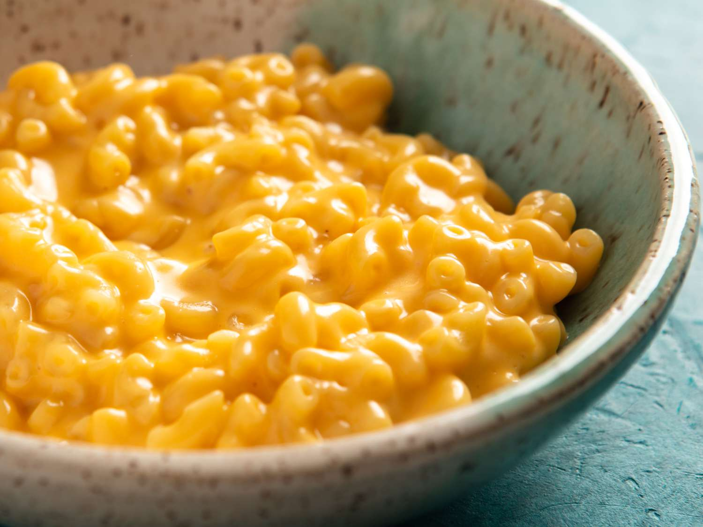

No Roux Mac and Cheese

Description:
Mac and cheese doesn't need to be difficult. With this recipe, you'll make a creamy mac and cheese without the need of a roux.
Just pasta, milk, butter, and cheese.
Ingredients:
- Elbow macaroni
- Butter
- Cheese
- Milk or cream
Steps:
- Boil your macaroni and cheese for 2 minutes less than package instructions
- Turn off stove and drain your macaroni
- Add macaroni back to pot
- Add milk and butter, turn stove to low
- Slowly stir in your choice of cheese, add in batches and not all at once to avoid clumps
- Enjoy